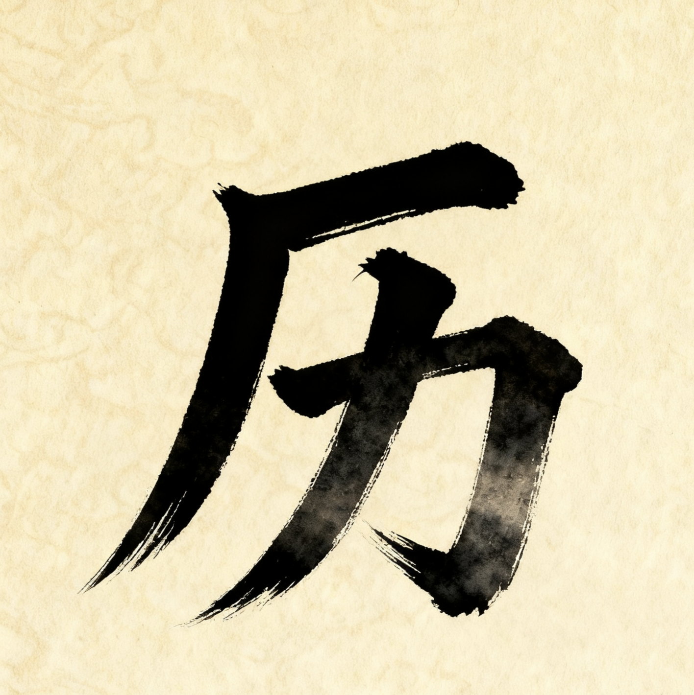
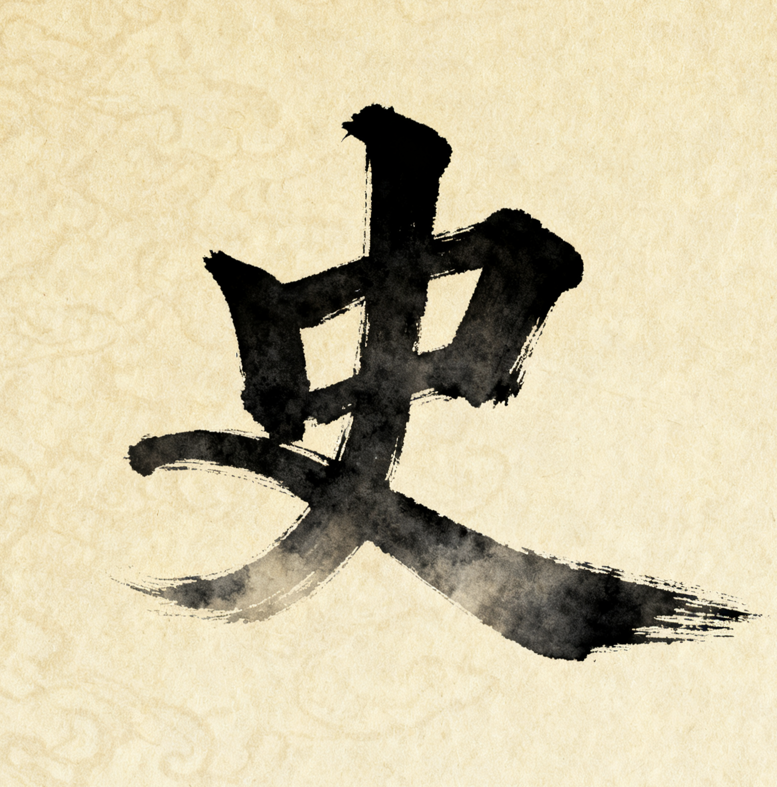
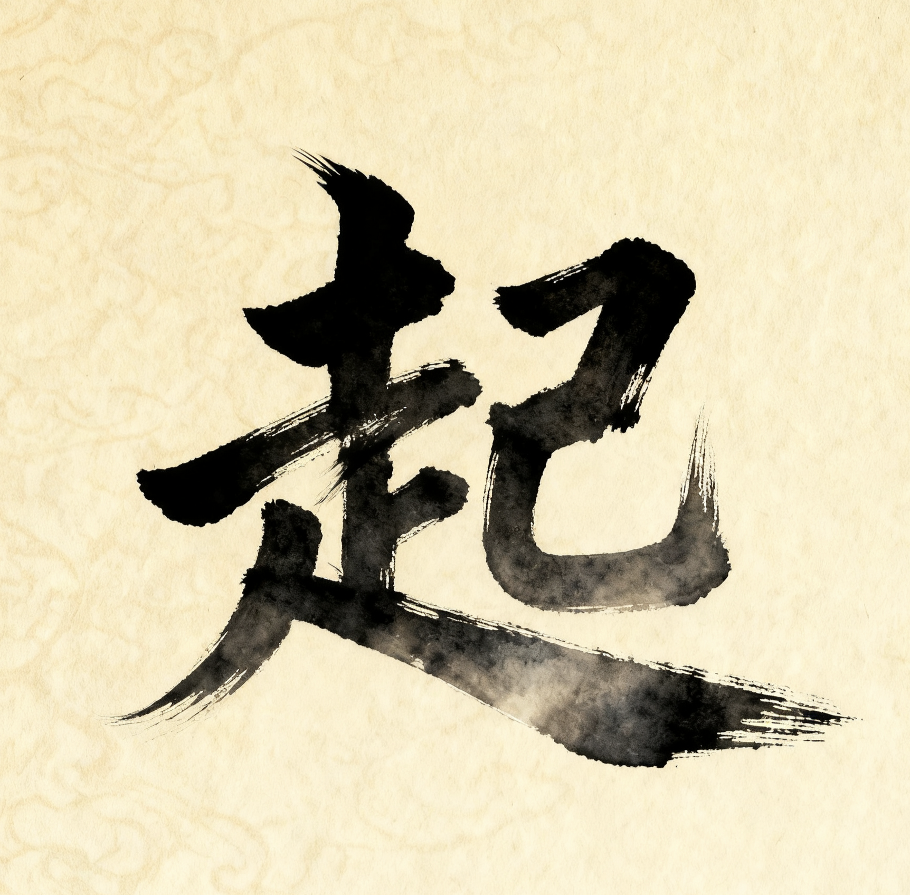
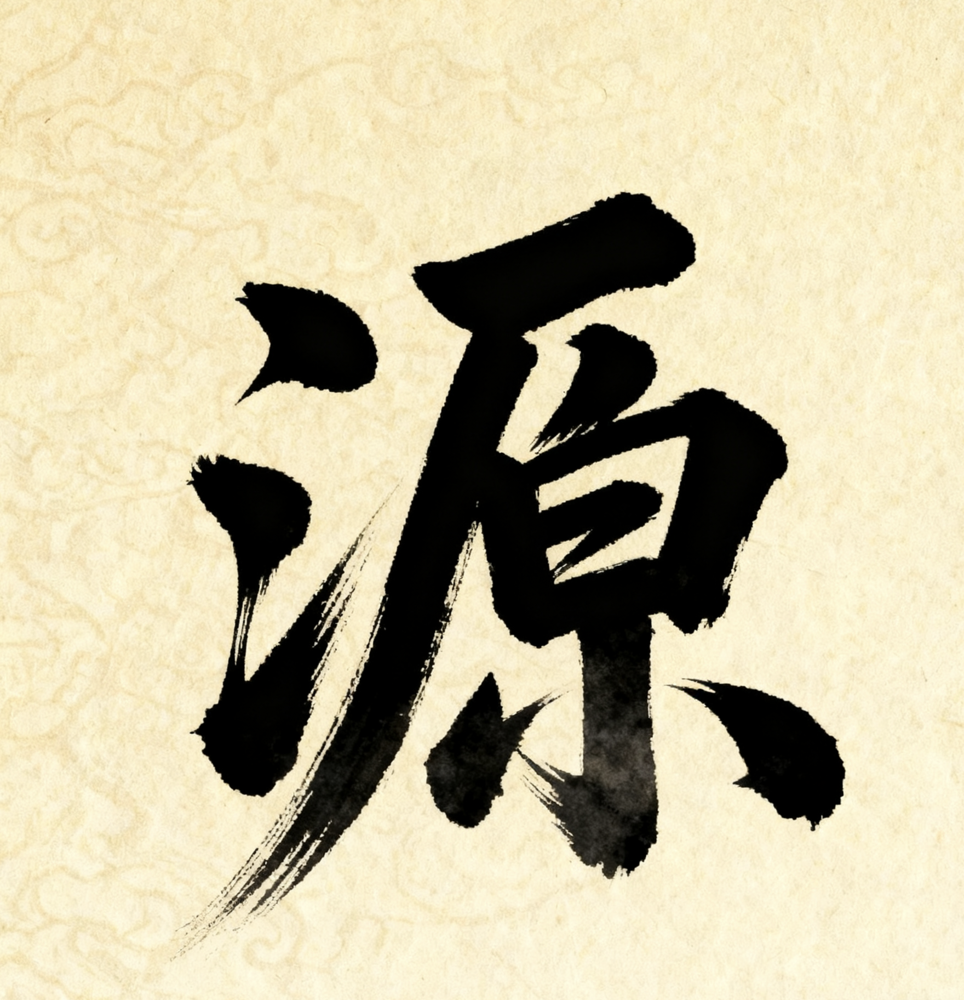

|  | 1.原始傩祭：起源于先民对自然灾异、疾病的敬畏，最初以集体舞蹈、呼喊的形式驱邪，是原始宗教与巫术的结合体。 |
|  | 2.商周制度化：进入商周时期，傩祭成为官方礼仪的一部分，有固定的仪式流程（如“国傩”“大傩”）和专职人员（如“方相氏”），功能从民间驱邪扩展到国家祈福。 |
|  | 3.汉唐演变为戏：汉唐时期，傩祭逐渐融入音乐、舞蹈、故事情节，面具造型更丰富，开始出现简单的角色和表演，从纯祭祀活动向“傩戏”形态过渡。 |
|  | 4.宋元至明清成熟：宋元后，傩戏吸收戏曲元素（如唱本、行当），形成不同地域特色的流派（如贵州傩戏、安徽傩戏），成为兼具祭祀功能与娱乐性的民间戏曲形式。 |